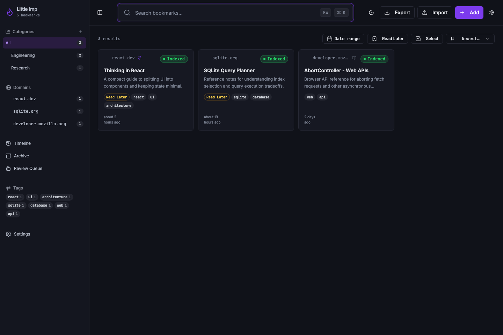
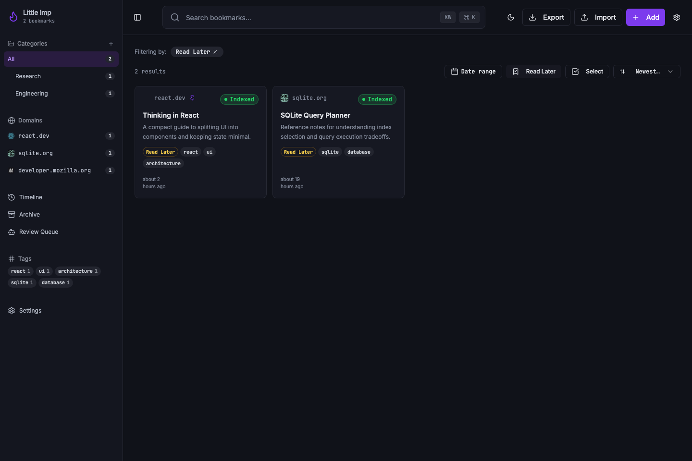
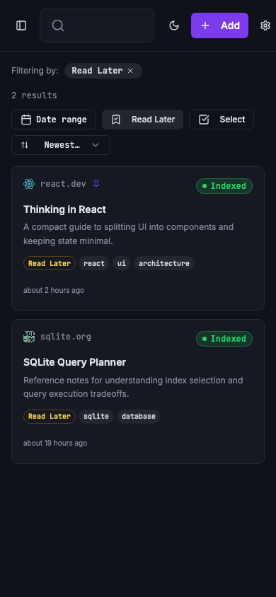
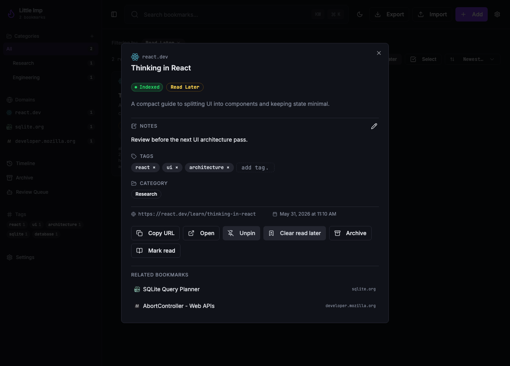

Little Imp Task Report
Read Later Bookmark Flag

Before
Bookmarks already supported pinned, archive, read/unread, notes, tags, and categories, but there was no first-class read-later state in storage, API responses, filters, or the list and detail UI.
Problem
Grimoire parity needs starred or favorite data to map to Little Imp pinned state, while read-later remains a separate user intent. Without a dedicated flag, import/export and UI behavior would blur two different bookmark meanings.
Changes Added
- Added a SQLite
read_latercolumn, repository support, update handling, list/search filters, and JSON/CSV export fields. - Regenerated the API contract and API docs with
read_lateron bookmark DTOs, update payloads, filters, and export rows. - Added read-later normalization, optimistic updates, filter state, card badges, detail controls, bulk read-later actions, and filtered export URLs in the frontend.
- Kept
is_pinnedseparate and documented it as the Grimoire starred/favorite mapping. - Hardened export validation and e2e mocks so invalid
read_laterfilters fail consistently and filtered exports stay covered. - Added daemon, API, import-default, frontend component, hook, and shared-contract tests.
Result
User Flow
Users can mark, clear, filter, and bulk-update read-later bookmarks from the library and detail surfaces without changing pinned state.
Contract
The daemon, frontend, generated docs, export payloads, and test fixtures now share the same read_later field expectations.
Verification
bun test ./src/test/bookmark-repository.test.ts ./src/test/integration/bookmarks.test.ts ./src/test/integration/search.test.ts ./src/test/integration/import.test.tspassed with 57/57 tests.npx vitest run src/components/BookmarkCard.test.tsx src/components/BookmarkDetailContent.test.tsx src/hooks/use-bookmarks.test.ts src/lib/api-contract.test.ts src/lib/export-url.test.tspassed with 64/64 tests.npm run lintexited 0 with the repository's existing Fast Refresh and exhaustive-deps warnings.npm run type-check,npx tsc --noEmit,npm run docs:api:check, andnpm run buildpassed.npm run test:e2epassed with 19/19 Playwright tests.git diff --checkpassed.- Desktop, read-later filtered, mobile, and detail screenshots were captured from the Vite app using fixture data.
Implementation Notes
The migration defaults existing bookmarks to read_later = 0, preserving existing libraries. Netscape HTML import does not provide pinned, favorite, or read-later metadata, so imported rows explicitly keep both parity flags off by default.
Additional Screenshots



Files Changed
daemon/src/db/migrations/0011_bookmark_read_later.sqldaemon/src/db/bookmark-repository.tsdaemon/src/db/search-repository.tsdaemon/src/routes/bookmarks.tsdaemon/src/routes/search.tsdaemon/src/routes/export.tsdaemon/src/api/contract.tssrc/lib/api.tssrc/hooks/use-bookmarks.tssrc/components/BookmarkCard.tsxsrc/components/BookmarkDetailContent.tsxsrc/components/ExportMenu.tsxsrc/lib/export-url.test.tssrc/lib/export-url.tssrc/pages/Index.tsxdocs/task-reports/2026/05/2026-05-31-task-089-read-later-bookmark-flag/index.html